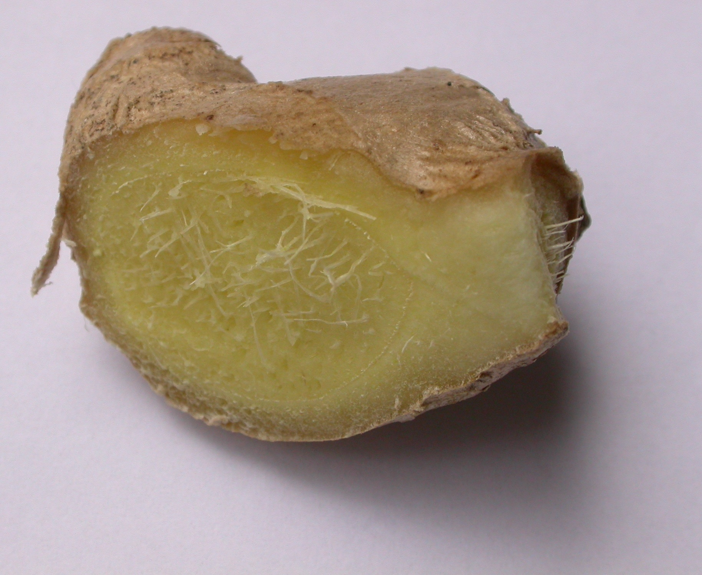

Ginger
Common Name: Ginger
Genus Species: Zingiber officinale
Family: Zingiberaceae
Origin: Tropical China
Cultivation: India, China, Japan, Indonesia, Australia (Queensland); Sierra Leone,
Nigeria; Jamaica and other West Indies islands
Description: One of the most popular of the hot-tasting spices is ginger, which is
obtained from the root of Zingiber officinale. The plant is indigenous to southern
China, from whence it is spread to the Spice Islands and other parts of Asia, and
subsequently to West Africa and to the Caribbean. India is now the main producer and
exporter. Extracts of ginger are used in foods, condiments, baked confections, candies,
beverages, cosmetics and perfumes. It is common to find it in many supermarkets for use
in food preparation or as an herbal medicine. China produces a ginger which is
particularly suited for confectionery, whereas Japanese ginger lacks the typical aroma.
Pickled ginger (gari or sushoga) is always used as a condiment for sushi. Overall,
ginger products vary considerably in taste, pungency and smell, while the root varies in
consistency, depending on the country of origin and the variety of the crop
